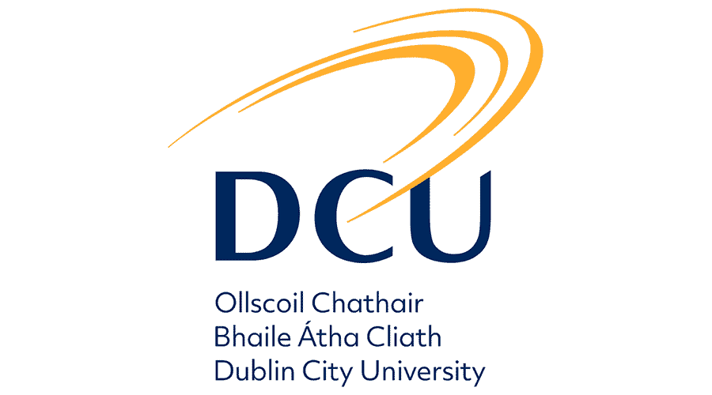
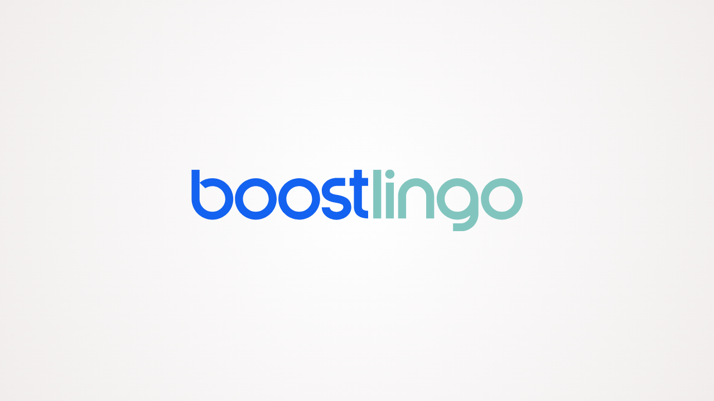

About Me
I recently graduated from Dublin City University with a BSc in Computer Science, where I developed a strong interest in software development and using technology to solve real-world problems. During my time at DCU, I gained experience across full-stack development, cloud technologies, databases and AI through a variety of individual and team projects.
As part of my degree, I completed a six-month Full Stack Engineering internship at Boostlingo. I worked within an agile development team on production software across both frontend and backend systems. The experience gave me the opportunity to solve real technical problems, collaborate with experienced engineers and gain an understanding of how software is developed and maintained in a professional environment.
I am now beginning the next stage of my career with an IT graduate role at EirGrid. I'm looking forward to building on my software development experience, expanding my knowledge of enterprise technology and contributing to systems that support Ireland's critical electricity infrastructure and transition towards renewable energy.

